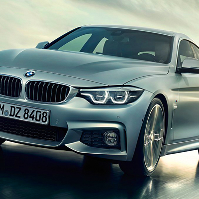
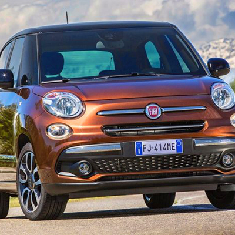
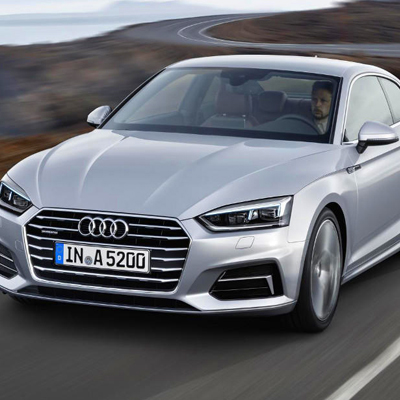
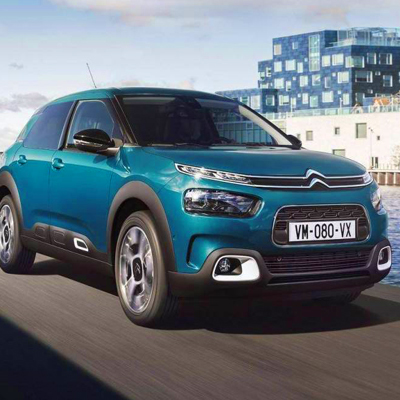
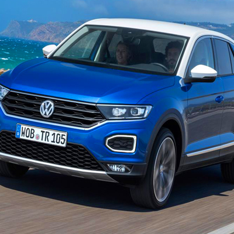
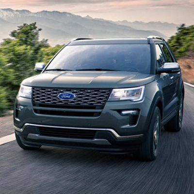

¡Regístrate ahora y consigue un descuento del 10%!
(X)

(X)
Nuestras marcas
     Puntos de recogida
Disfruta de los atractivos monumentales y el gran ambiente del centro histórico de Valencia, con lugares como la plaza del Ayuntamiento; la plaza de la Virgen; y el popular barrio del Carmen. También es un punto que conecta con muchos otros concurridos, como la famosa Ciudad de las Artes y las Ciencias y su paseo del río, al igual que monumentos como las torres de Serrano y Quart. Sin duda, un punto del que no te arrepentirás por su comodidad y encanto.Si buscas un coche aquí, contáctenos.
Esta zona es magnífica para la gente que ha venido a disfrutar de la playa y de las muchas más que tiene Valencia a su alrededor. Una zona tranquila, respirando brisa marina,... Pueden ir hasta pueblos cercanos desde aquí, como Portsaplaya o Buñol, o visitar zonas como el Saler y la Albufera. Disponemos de mapas y diferentes rutas que te encantarán. Si buscas un coche aquí, contáctenos.
Campanar es el Nuevo Centro, dispone de grandes almacenes de tiendas y mucho más donde podrás pasar tardes divertidas y espléndidas con la familia. Cerca encontrarás también el paseo del río y a pocos minutos el parque de Cabecera. Este punto es perfecto para la gente que no desea meterse muy al fondo de la ciudad y prefiere un lugar más desplazado, al igual que está bien conectado si desea hacer rutas por las afueras de Valencia por la zona interior.Si buscas un coche aquí, contáctenos.
CONTACTA CON NOSOTROS